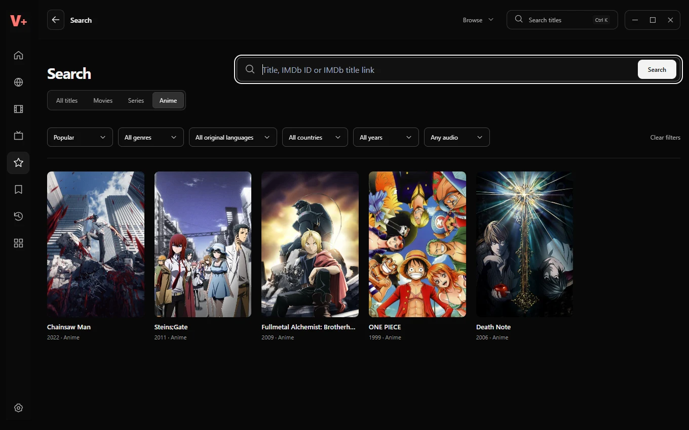
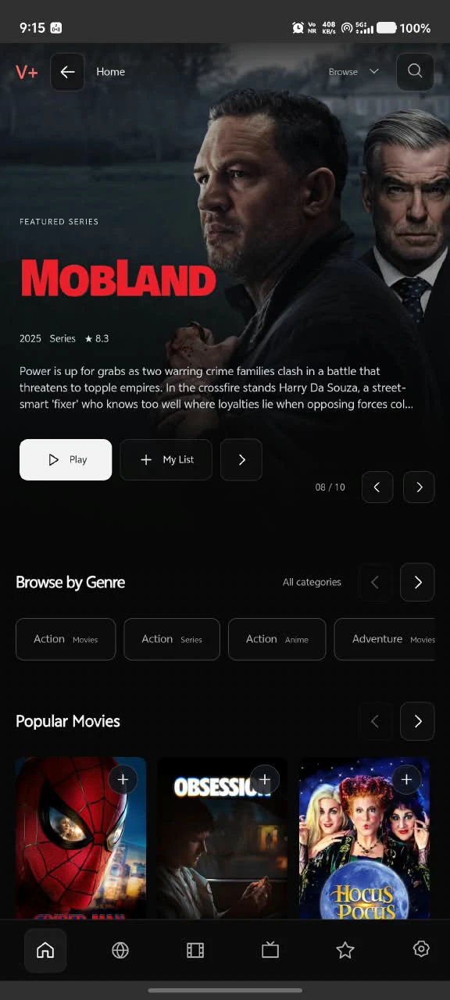

Windows
A compact rail, quick search and a full episode browser for mouse and keyboard. Playback sources open with their own controls.
A cinematic home for movies, series and anime, designed for a laptop, a TV remote and a phone.
Product design, interaction design and AI-assisted implementation.
Explore the interfacesProduct & interaction design
Visual direction
0.6.8
Mouse and keyboard
0.7.2
Remote and focus navigation
0.7.1
Touch and Android Back
V+ brings movies, series and anime into one catalogue. The design challenge was to keep discovery, title details and playback connected while making each interface work with its own input.
Development feedback pointed to concrete problems. Menus could close before the mouse reached them, long episode lists were hard to browse, and the TV interface used more space than it needed.
An independent project shaped by iterative feedback and direct application checks.
Featured artwork introduces titles, while separate movie, series and anime shelves support browsing. Quick search opens suggestions over the current page. Dedicated search keeps filters and results together for more deliberate browsing.
Series use season navigation where metadata supports it. Long anime entries have episode ranges and direct jumps, with related entries shown as their own cards. My List and watch progress are stored on the device.

A compact rail, quick search and a full episode browser for mouse and keyboard. Playback sources open with their own controls.
Directional focus, a visible selection outline and adjustable text and poster sizes. The compact update brings more of the catalogue into view.
Touch targets, bottom navigation, the native search keyboard and Android Back in a portrait layout.


The Windows app uses Electron. Android uses a native host and shares catalogue and interface code where it fits. Each platform handles input and back navigation separately.
Packaged Windows checks exercised search, settings and episode navigation. Android emulator checks covered remote and touch navigation, local watch state, and video and subtitle playback with licensed test media. The TV layout was checked at 720p, 1080p and 960 × 540.
Playback and captions depend on the selected provider. Progress is device-local. Physical TV acceptance remains pending.
I directed the product, visual choices and review iterations. Codex assisted implementation and verification.